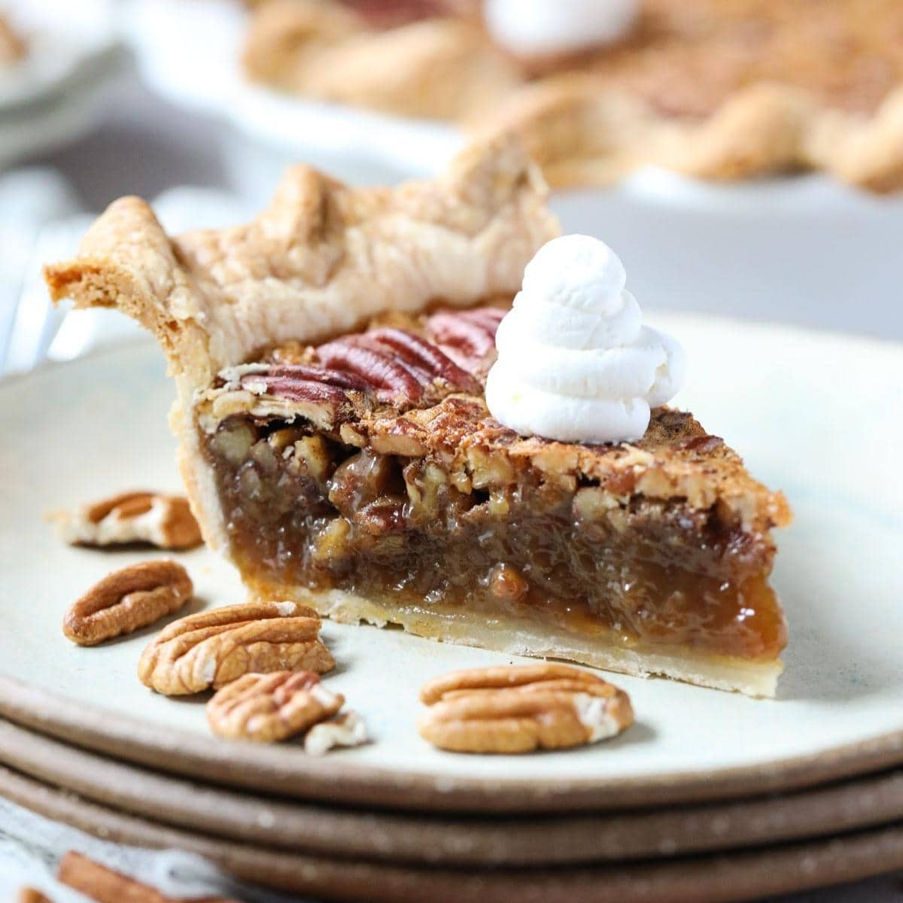

Pecan Pie

Description:
A classic Southern Pecan Pie recipe with a rich, decadent filling and lots of sweet, buttery pecans. Made with dark Karo syrup, brown sugar, butter, and vanilla, this pie has a robust flavor with an irresistible gooey texture!
Ingredients:
- 1 pie shell
- 1 3/4 cups white sugar
- 1/4 cup dark corn syrup
- 1/4 cup butter
- 1 tablespoon cold water
- 2 teaspoons cornstarch
- 3 eggs
- 1/4 teaspoon salt
- 1 teaspoon vanilla extract
- 1 1/4 cups chopped pecans
Steps:
- Preheat oven to 350 degrees F.
- Combine sugar, corn syrup, butter, water, and cornstarch in a saucepan over medium heat. Bring to a full boil; remove from heat.
- In a large bowl, beat eggs until frothy. Gradually beat in cooked syrup mixture. Stir in salt, vanilla, and pecans.
- Pour pecan mixture into pie shell.
- Bake in the preheated oven until filling is set, 45 to 50 minutes.